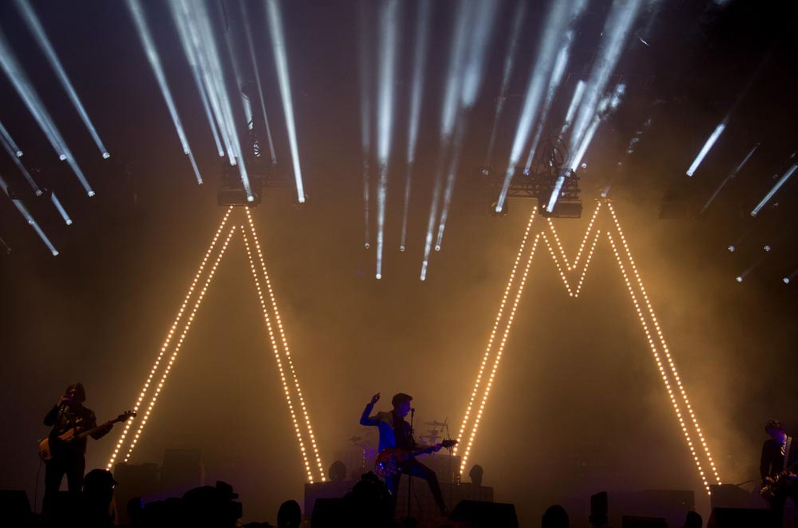

Musical Style

Record Label : Domino
Members: Alex Turner, James Cook, Matt Helders, Nick O'Malley
Musical Style
Garage, Indie, Punk
The key part of their sound, and one that translates across their whole discography,
is lead singer and frontman Alex Turner's intricate and often rapidly delivered
lyrics,
sung in a distinctive strong Sheffield accent that their music became famed for in their early years.
A large part of their iconic British sound is credited to the punk poet John
Cooper Clarke from whom the Arctic Monkeys even borrowed lyrics and the title in
"I Wanna Be Yours". Turner adapted Clarke's method of delivery mostly in their
first album, Whatever People Say I Am That's What I'm Not.
The Artic Monkeys are an English rock band formed in 2002 from Sheffield
England They have released 6 Studio Albums.
Their debut album is the fastest selling debut album in the UK.
Rolling Stone ranked it the 30th-greatest debut album.
The band has won 7 Brit awards including best artist and album. They have had 7
Grammy nominations. They have headlined Glastonbury Festival as well.
Sources from https://en.wikipedia.org/wiki/Arctic_Monkeys